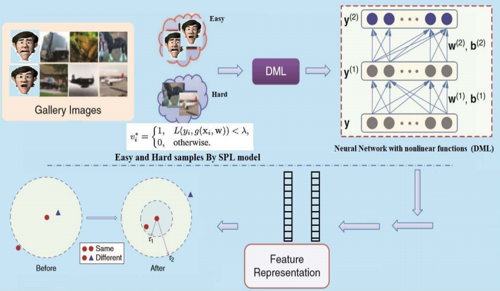

Wang Yu
 |
Ph.D., Assistant research felllow |
News!
[2021/06] "A recursive regularization based feature selection framework for hierarchical classification" has been published on IEEE Transactions on Knowledge and Data Engineering (TKDE).
[2021/05] "Get to the point: content classification of animated graphics interchange formats with key-frame attention" has been accepted by IEEE International Conference on Image Processing (ICIP).
[2021/04] “Self-paced hierarchical metric learning" has been accepted by International Journal of Machine Learning and Cybernetics (JMLC).
[2021/02] ”Hierarchical semantic risk minimization for large-scale classification" has been accepted by IEEE Transactions on Cybernetics (TCYB).
[2021/02] Greetings! Five undergraduate students join my team.
Bio
Wang Yu (王煜) is currently an assistant research fellow at Tianjin University (TJU), China. His research lies in data mining and machine learning in artificial intelligence, including multi-granularity classification, open-set recognition, incremental learning, and their applications to image classification and fault diagnosis of large-scale mechinery. He has published many papers in highly regarded journals and conferences such as IEEE TFS, IEEE TCYB, IEEE TKDE, IEEE ICDM, etc.
Call for graduate and undergraduate students! Hope you are hardworking and have basic programming skills. I can offer detailed supervision for you and help construct a great career for you. Feel free to contact me via email.
Publication
Journal:
 |
[TCYB] |
 |
[TKDE] |
|  | [JMLC] |
{kind=link}
 |
[TFS] |
 |
[中国科学] |
 |
[PR] |
Conference:
 |
[ICIP] |
 |
[ICDM] |
Service
I serves as a reviewer of:
IEEE Transactions on Neural Networks and Learning Systems (TNNLS)
IEEE Transactions on Image Processing (TIP)
IEEE Transactions on Cybernetics (TCYB)
IEEE Internet of Things Journal (IoTJ)
IEEE Conference on Computer Vision and Pattern Recognition (CVPR)
IEEE International Conference on Computer Vision (ICCV)
etc